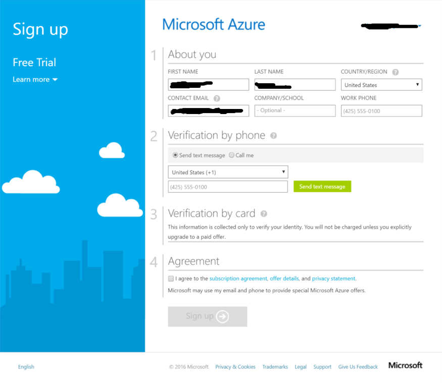
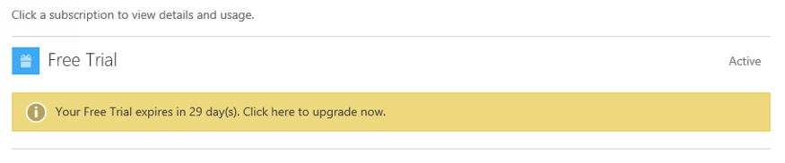
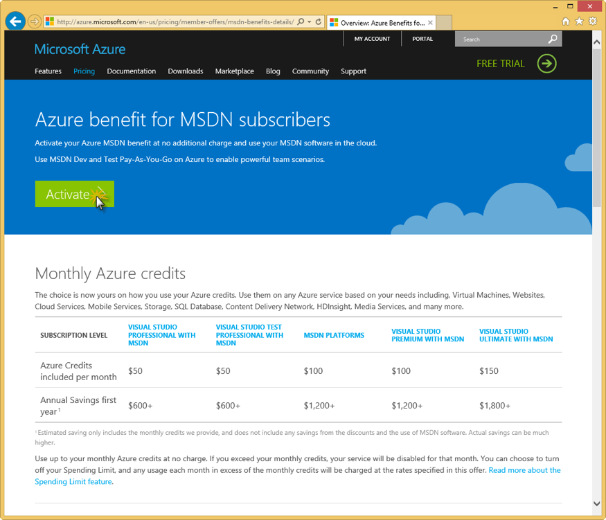
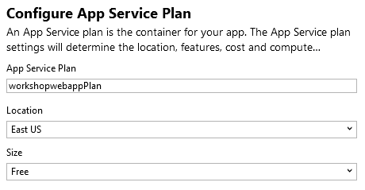
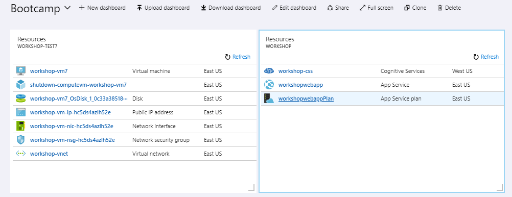

Introduction
Welcome to Global Azure Bootcamp 2018! All around the world user groups and communities want to learn about Azure and Cloud Computing! On April 22, 2017, all communities will come together once again in the fifth great Global Azure Bootcamp 2018 event! Each user group will organize their own one day deep dive class on Azure the way they see fit and how it works for their members. The result is that thousands of people get to learn about Azure and join together online under the social hashtag #GlobalAzure! Join hundreds of other organizers to help out and be part of the experience!
About the 2018 Louisville Global Azure Bootcamp
The 2018 Louisville Global Azure Bootcamp is a free one-day global training event on Azure, from the community to the community. See our event home page for more details.
This years format will be a blend of brief presentations, followed by hands-on and guided labs.
Our speakers include:
Getting Started
To get started you'll need the following pre-requisites. Please take a few moments to ensure everything is installed and configured.
- Microsoft Windows PC
- Visual Studio 2017 or later
- Azure Subscription (Trial is ok, or an Azure account linked to a Visual Studio subscription or MSDN account. See later sections of this chapter to create a free trial account or activate your Visual Studio subscription)
What You're Building
Azure is big. Really big. Too big to talk about all things Azure in a single day.
We've assembled an exciting workshop to introduce you to several Azure services that cloud developers should know about:
- Web app
- Cognitive Services API for customized speech to text
- Cognitive Services API for Language Understanding (LUIS)
In this year’s Global Azure Bootcamp, you’ll learn how to integrate Azure’s customizable speech recognition, text analytics, and intent analysis APIs into an Azure-hosted app. You’ll start by learning about the Custom Speech Service, a speech recognition API that can be trained to filter out background noise and recognize obscure words and phrases. After training the speech recognition model, you’ll integrate it into an Azure-hosted web app to recognize real-time speech. Finally, you’ll integrate and train the Language Understanding and Intelligence Service (LUIS) to analyze the intent of speech phrases you generate. With the intent identified, your app will be able to respond in real time.
Key concepts and takeaways
- Navigating the Azure portal
- Using Azure Resource Groups to manage multiple Azure services
- Deploying a web app to Azure web app service
- Developing language and acoustic models for the Custom Speech Service
- Deploying a customized speech recognition API
- Developing intent models for the Language Understanding (LUIS) service
- Deploying a customized LUIS endpoint
- Integrating speech recognition and intent analysis into an application
Agenda
- Chapter 0: Introduction
- Chapter 1: Getting Started in Azure
- Chapter 2: Introduction to the Custom Speech Service
- Chapter 3: Building Custom Speech Service Datasets
- Chapter 4: Custom Speech Service Models
- Chapter 5: Deploying Custom Speech Service Endpoints
- Chapter 6: Introduction to Language Understanding (LUIS)
- Chapter 7: Creating LUIS App Assets
- Chapter 8: Publishing and Testing LUIS Endpoints
- Chapter 9: Integrating LUIS into Your App
Materials
You can find additional lab materials and presentation content at the locations below:
- Presentation: https://github.com/mikebranstein/global-azure-bootcamp-2018
- Source code for the code used in this guide: https://github.com/mikebranstein/global-azure-bootcamp-2018
- This guide: https://github.com/mikebranstein/global-azure-bootcamp-2018-instructions
Creating a Trial Azure Subscription
If you already have an Azure account
If you have an Azure account already, you can skip this section. If you have a Visual Studio subscription (formerly known as an MSDN account), you get free Azure dollars every month. Check out the next section for activating these benefits.
There are several ways to get an Azure subscription, such as the free trial subscription, the pay-as-you-go subscription, which has no minimums or commitments and you can cancel any time; Enterprise agreement subscriptions, or you can buy one from a Microsoft retailer. In exercise, you'll create a free trial subscription.
Exercise: Create a Free Trial Subscription
Browse to the following page http://azure.microsoft.com/en-us/pricing/free-trial/ to obtain a free trial account.
Click Start free.
Enter the credentials for the Microsoft account that you want to use. You will be redirected to the Sign up page.
Note
Some of the following sections could be omitted in the Sign up process, if you recently verified your Microsoft account.
Enter your personal information in the About you section. If you have previously loaded this info in your Microsoft Account, it will be automatically populated.

In the Verify by phone section, enter your mobile phone number, and click Send text message.

When you receive the verification code, enter it in the corresponding box, and click Verify code.

After a few seconds, the Verification by card section will refresh. Fill in the Payment information form.
A Note about your Credit Card
Your credit card will not be billed, unless you remove the spending limits. If you run out of credit, your services will be shut down unless you choose to be billed.

In the Agreement section, check the I agree to the subscription Agreement, offer details, and privacy statement option, and click Sign up.
Your free subscription will be set up, and after a while, you can start using it. Notice that you will be informed when the subscription expires.

Your free trial will expire in 29 days from it's creation.

Activating Visual Studio Subscription Benefits
If you happen to be a Visual Studio subscriber (formerly known as MSDN) you can activate your Azure Visual Studio subscription benefits. It is no charge, you can use your MSDN software in the cloud, and most importantly you get up to $150 in Azure credits every month. You can also get 33% discount in Virtual Machines and much more.
Exercise: Activate Visual Studio Subscription Benefits
To active the Visual Studio subscription benefits, browse to the following URL: http://azure.microsoft.com/en-us/pricing/member-offers/msdn-benefits-details/
Scroll down to see the full list of benefits you will get for being a MSDN member. There is even a FAQ section you can read.
Click Activate to activate the benefits.

You will need to enter your Microsoft account credentials to verify the subscription and complete the activation steps.
Preparing your Azure environment
You might be wondering how you can participate in a cloud development workshop and not need Visual Studio installed. Am I right?
Thanks to the Azure Resource Manager and some nifty templates I put together, we're going to provision a virtual machine (VM) with Visual Studio installed in your Azure subscription. From that point forward, you can work from the VM.
It takes about 10 minutes to get the VM deployed to your subscription, so let's get started!
Exercise: Provisioning a Visual Studio Community VM in your Azure Subscription
Start by clicking the Deploy to Azure button below.

This opens the Azure portal in a new tab of your browser. If you're prompted to sign in, do so.
When the page loads, you'll see this custom deployment page:
Under Basics, select/enter the following
- Subscription: your Azure subscription
- Resource group: Create new
- Resource group name: workshop-vm, or some other name that's easy to remember
- Location: East US
Resource Groups
Formally, resource groups provide a way to monitor, control access, provision and manage billing for collections of assets that are required to run an application, or used by a client or company department. Informally, think of resource groups like a file system folder, but instead of holding files and other folders, resource groups hold azure objects like storage accounts, web apps, functions, etc.
Under Settings, enter
- Virtual Machine Name: workshop-vm, or some other name that is less than 15 characters long, and no special characters
- Admin Username: your first name, or some other username without spaces
- Admin Password: P@ssW0rd1234, or another 12-character password with upper, lower, numbers, and a special character
WARNING
Do not forget your username and password. Write it down for today.
Approving the "Purchase"
Scroll down to the bottom of the page and click two boxes:
- I agree to the terms and conditions stated above
- Pin to dashboard
Press the Purchase button.
Deploying the VM
After a few moments, the deployment of your VM will begin, and you'll see a status notification in the upper right:

...and a deployment tile on your dashboard:

Now, wait for about 10 minutes and your virtual machine will be deployed and ready to use.
That's it for the pre-requisites for today's workshop. Wait until your VM is created, and we'll be getting started soon!
Getting started in Azure
All the code you'll need for working through the workshop are stored on Github at https://github.com/mikebranstein/global-azure-bootcamp-2018.
Pre-requisites
Before we go any further, be sure you have all the pre-requisites downloaded and installed. You'll need the following:
- Microsoft Windows PC or Mac
- Evergreen web browser (Edge, Chrome, Firefox)
- Azure Subscription (trial is ok, and you should have already done this in the chapter 0)
- A Visual Studio Community edition VM running in Azure (see chapter 0 for setting this up)
- The bootcamp files on Github
Organizing your resources in the Azure portal
One of the most important aspects of your Azure subscription and using the Azure portal is organization. You can create a lot of Azure resources very quickly in the portal, and it can become cluttered quickly. So, it's important to start your Azure subscription off right.
Our first stop will be to create a new Dashboard to organize our Azure resources we're building today.
Exercise: Create a Dashboard and Resource Group
Creating a Dashboard
We'll start by creating a dashboard.
Login to the Azure portal, click + New Dashboard, give the dashboard name, and click Done customizing.
That was easy! Dashboards are a quick way of organizing your Azure services. We like to create one for the workshop because it helps keep everything organized. You'll have a single place to go to find everything you build today.
Pinning a Resource Group to the Dashboard
Now that you have a new dashboard, let's put something on it. We'll be searching for the resource group you created in chapter 0 (the one that is holding your VM), and pinning it to this dashboard.
Resource Groups
You'll recall from the last chapter that resource groups provide a way to monitor, control access, provision and manage billing for collections of assets that are required to run an application, or used by a client or company department. Informally, think of resource groups like a file system folder, but instead of holding files and other folders, resource groups hold azure objects like storage accounts, web apps, functions, etc.
Start by searching for the resource group you created in chapter 0. My resource group was called workshop-test7.
Click in the search bar at the top. If you're lucky your resource group will be at the very top (like mine was). If not, type it's name and click on it.
This opens the resource group. Next, click the pin icon at the upper-right to pin the resource group to your dashboard:
Finally, close the resource group, by clicking the X in the upper right corner (next to the pin icon). You should see the resource group pinned to your dashboard:
Now that you have the VM's resource group pinned to your dashboard, it will be easy to locate the VM in later exercises.
Creating a Resource Group
Our last step will be to create a new Resource Group to house the non-VM resources we'll create in this workshop.
Start by clicking the + Create a resource button on the left.
Search for resource group by using the search box, selecting Resource Group when it appears.
Select Resource Group from the search results window:

Click Create at the bottom:
Give the Resource group a name, select your Azure subscription, and a location. Press Create when you're finished.
After it's created, you'll see a message in the notification area:
Pin it to your dashboard by clicking the Pin to dashboard button. Note that the resource group has been added to your dashboard.

That wraps up the basics of creating dashboard, creating resource groups, and pinning resources to a dashboard. We're not going to take a deep dive into Azure Resource Group. If you're interested in learning more, check out this article.
Logging into your virtual machine
Next, let's get logged into the VM that we created in chapter 0.
Exercise: Logging into your VM
Start by navigating to your Azure portal dashboard.
Locate the VM resource group you pinned earlier in this chapter and click on your virtual machine:
Click the Connect button.
This downloads a file to your computer that will open in your Remote Desktop program.
Click the downloaded file to open a connection to your VM. Enter your username and password you created earlier.

Click OK to connect.
If you're prompted by a security message, respond Yes:

You're now connected to your VM.
Download additional software
If you're like me, you have a standard toolset you like to use. Please, download software for your VM and don't forget your browser of choice, Notepad++, Visual Studio Code, etc.
Get a real browser!
Download Chrome/Firefox/Edge
It's important that you download an evergreen browser on your virtual machine, because the version of Internet Explorer installed on the VM is not compatible with some of the JavaScript we have in this workshop.
Before you can download files through Internet Explorer, you need to enable downloads. Go to Tools -> Internet Settings -> Security -> Internet -> Custom Level. Find Downloads -> File download, then select Enabled. Close Internet Explorer, then re-open.
Now, you can download your favorite browser. And don't forget to set it as your default. Don't use IE.
This concludes the exercise.
Now that you're connected to your VM, you can continue to workshop from inside the VM.
Running a VM in Azure
If you're worried about excessive charges to your Azure subscription because you're running a VM constantly, don't worry. This VM is programmed to shut itself down every morning at 1:00 AM.
Clone project from master branch
Let's get started by getting the master branch.
Exercise: Getting the bootcamp files
Clone or download the master branch from https://github.com/mikebranstein/global-azure-bootcamp-2018.
Use this link to download a zip file of the master branch.

Unblock the .zip file!
Don't open the zip file yet. You may need to unblock it first!
If you're running Windows, right-click the zip file and go to the properties option. Check the Unblock option, press Apply, press Ok.
Now it's safe to unzip the file.
Verify the site works
Exercise: Compiling the solution
Open the solution in Visual Studio by double-clicking the Web.sln file in the web folder of the extracted files:
Logging into Visual Studio the first time
When you open Visual Studio the first time, it may take a few minutes. Be patient. You'll probably be prompted to sign in. Use your Microsoft account to sign in (the same one you used to sign up for the Azure trial).
The opened solution should look like this:
Build and debug the solution. You should see the Speech Recognition site load in your browser.
This concludes the exercise.
That's it! You're up and running and ready to move on! In the next section, you'll learn how to deploy your website to Azure.
Understanding App Service and Web Apps
In the last part of this chapter, you'll learn how to create an Azure Web App and deploy the Speech Service website to the cloud. In short, I like to think of Azure Web Apps like IIS in the cloud, but without the pomp and circumstance of setting up and configuring IIS.
Web Apps are also part of a larger Azure service called the App Service, which is focused on helping you to build highly-scalable cloud apps focused on the web (via Web Apps), mobile (via Mobile Apps), APIs (via API Apps), and automated business processes (via Logic Apps).
We don't have time to fully explore all of the components of the Azure App Service, so if you're interested, you can read more online.
What is an Azure Web App?
As we've mentioned, Web Apps are like IIS in the cloud, but calling it that seems a bit unfair because there's quite a bit more to Web Apps:
Websites and Web Apps: Web Apps let developers rapidly build, deploy, and manage powerful websites and web apps. Build standards-based web apps and APIs using .NET, Node.js, PHP, Python, and Java. Deliver both web and mobile apps for employees or customers using a single back end. Securely deliver APIs that enable additional apps and devices.
Familiar and fast: Use your existing skills to code in your favorite language and IDE to build APIs and apps faster than ever. Access a rich gallery of pre-built APIs that make connecting to cloud services like Office 365 and Salesforce.com easy. Use templates to automate common workflows and accelerate your development. Experience unparalleled developer productivity with continuous integration using Visual Studio Team Services, GitHub, and live-site debugging.
Enterprise grade: App Service is designed for building and hosting secure mission-critical applications. Build Azure Active Directory-integrated business apps that connect securely to on-premises resources, and then host them on a secure cloud platform that's compliant with ISO information security standard, SOC2 accounting standards, and PCI security standards. Automatically back up and restore your apps, all while enjoying enterprise-level SLAs.
Build on Linux or bring your own Linux container image: Azure App Service provides default containers for versions of Node.js and PHP that make it easy to quickly get up and running on the service. With our new container support, developers can create a customized container based on the defaults. For example, developers could create a container with specific builds of Node.js and PHP that differ from the default versions provided by the service. This enables developers to use new or experimental framework versions that are not available in the default containers.
Global scale: App Service provides availability and automatic scale on a global datacenter infrastructure. Easily scale applications up or down on demand, and get high availability within and across different geographical regions. Replicating data and hosting services in multiple locations is quick and easy, making expansion into new regions and geographies as simple as a mouse click.
Optimized for DevOps: Focus on rapidly improving your apps without ever worrying about infrastructure. Deploy app updates with built-in staging, roll-back, testing-in-production, and performance testing capabilities. Achieve high availability with geo-distributed deployments. Monitor all aspects of your apps in real-time and historically with detailed operational logs. Never worry about maintaining or patching your infrastructure again.
Deploying to a Web App from Visual Studio
Now that you understand the basics of web apps, let's create one and deploy our app to the cloud!
Earlier in this chapter, you created a resource group to house resources for this workshop. You did this via the Azure Portal. You can also create Web Apps via the Azure portal in the same manner. But, I'm going to show you another way of creating a Web App: from Visual Studio.
Exercise: Deploying to a Web App from Visual Studio 2017
Visual Studio 2017 Warning
This exercise assumes you're running Visual Studio 2017. The UI and screens in Visual Studio 2015 aren't the same, but similar. We're not going to include screen shots for 2015, but we think you can figure it out.
From Visual Studio, right-click the Web project and select Publish. In the web publish window, select Microsoft Azure App Service, Create New, and press Publish. This short clip walks you through the process:
On the next page, give your Web App a name, select your Azure subscription, and select the Resource Group you created earlier (mine was named workshop).
Unique Web App Names
Because a web app's name is used as part of it's URL in Azure, you need to ensure it's name is unique. Luckily, Visual Studio will check to ensure your web app name is unique before it attempts to create it. In other words, don't try to use the web app name you see below, because I already used it.

Click New... to create a new Web App plan.
Web App Plans
Web App plans describe the performance needs of a web app. Plans range from free (where multiple web apps run on shared hardware) to not-so-free, where you have dedicated hardware, lots of processing power, RAM, and SSDs. To learn more about the various plans, check out this article.
Create a new free plan.

After the plan is created, click Create to create the Web App in Azure.
When the Azure Web App is created in Azure, Visual Studio will publish the app to the Web App. after the publish has finished, your browser window will launch, showing you your deployed website.
Web App URLs
The deployed web app has a URL of Web App Name.azurewebsites.net. Remember this URL, because you'll be using it in later chapters.
One final note is to check the Azure Portal to see the App Service plan and Web App deployed to your resource group:

This concludes the exercise.
Introduction to the Custom Speech Service
In this chapter you'll learn about the Custom Speech Service, how to provision one in the Azure Portal, and how to link your subscription to the Custom Speech Service portal.
Abbreviation
To save some time, you may see me refer to the Custom Speech Service as CSS. I know it can be confusing, especially if you're a web developer. But, let's pretend for a day that you're not, and use CSS in a different way. Thanks!
Overview
The Custom Speech Service enables you to create a customized speech-to-text platform that meets the needs of your business. With the service, you create customized language models and acoustic models tailored to your application and your users. By uploading your specific speech and/or text data to the Custom Speech Service, you can create custom models that can be used in conjunction with Microsoft’s existing state-of-the-art speech models. With these capabilities, you're able to filter out common background noise, adjust for localized dialects, and train the speech service to recognize non-standard/obscure words and phrases (like "Pokemon", scientific terms, and technical jargon).
For example, if you’re adding voice interaction to a mobile phone, tablet or PC app, you can create a custom language model that can be combined with Microsoft’s acoustic model to create a speech-to-text endpoint designed especially for your app. If your application is designed for use in a particular environment or by a particular user population, you can also create and deploy a custom acoustic model with this service.
How do speech recognition systems work?
Before you get started, it's important to understand how speech recognition systems work.
Speech recognition systems are composed of several components that work together. Two of the most important components are the acoustic model and the language model.
Acoustic Model
The acoustic model is a classifier that labels short fragments of audio into one of a number of phonemes, or sound units, in a given language. For example, the word “speech” is comprised of four phonemes “s p iy ch”. These classifications are made on the order of 100 times per second.
Phoneme
In short, a sound unit. Any of the perceptually distinct units of sound in a specified language that distinguish one word from another, for example p, b, d, and t in the English words pad, pat, bad, and bat.
Language Model
The language model is a probability distribution over sequences of words. The language model helps the system decide among sequences of words that sound similar, based on the likelihood of the word sequences themselves. For example, “recognize speech” and “wreck a nice beach” sound alike but the first hypothesis is far more likely to occur, and therefore will be assigned a higher score by the language model.
Both the acoustic and language models are statistical models learned from training data. As a result, they perform best when the speech they encounter when used in applications is similar to the data observed during training. The acoustic and language models in the Microsoft Speech-To-Text engine have been trained on an enormous collection of speech and text and provide state-of-the-art performance for the most common usage scenarios, such as interacting with Cortana on your smart phone, tablet or PC, searching the web by voice or dictating text messages to a friend.
Credits
This section was borrowed from Microsoft's official documentation. Thank you!
Using the Custom Speech Service, Acoustic Models, and Language Models
Throughout the next several chapters, you'll be building acoustic and language models. Don't worry if you don't understand everything right now, because you'll be learning as you go.
Bing Speech API
Microsoft has another speech-to-text service in Azure called the Bing Speech API. This API is like the Custom Speech Service, but it cannot be customized. I like to think of the Bing Speech API as a v1 product, and the Custom Speech Service as a v2 product. Both are highly capable, but when I need to account for background noise, custom words, etc. I choose the Custom Speech Service.
Provisioning in Azure
Now that you know what the Custom Speech Service can do, let's start using it! You'll start by creating a Custom Speech Service instance in the Azure portal.
Exercise: Creating a Custom Speech Service Instance
Start by jumping back to the Azure portal, and create a new resource by clicking the Create a resource button.
Search for Custom Speech Service:
Fill out the required parameters as you create an instance:
- Name: workshop-css, or something similar
- Subscription
- Location: West US
- Pricing tier: F0
- Resource group: the resource group you created earlier
West US Location
Normally, I recommend you keep resources in the same region, but the Custom Speech Service is in preview right now, so it's only available in West US.
When the Custom Speech Service instance is provisioned, it will appear in your resource group:

The final step is to navigate to the Custom Speech Service instance by clicking on it.
Locate the Keys area and take note of KEY 1:
You'll need this key in the next step, so don't forget it.
This concludes the exercise.
Linking your Subscription on the CSS Web Portal
There's not much you can do with the Custom Speech Service in the Azure portal because the service is still in preview. Instead, a separate portal exists to perform customizations and work with the service. In the next section, you'll be introduced to the Custom Speech Service portal.
Exercise: Linking your CSS subscription to the CSS portal
Start by navigating to the CSS web portal at https://cris.ai.
Click the Sign In link in the upper right and sign in with your Azure portal subscription login.
After logging in, click on your name the upper right, and select the Subscriptions option below it:
Subscriptions
The Subscriptions page shows all of your connected CSS subscriptions.
Click the Connect existing subscription button. Add the CSS subscription you just created in the Azure portal. Give it a name and enter KEY 1 from the Azure portal.
You should see the subscription appear on the subscriptions page.
This concludes the exercise.
That's it. In the next chapter, you'll start to use the CSS by creating various datasets for training and testing.